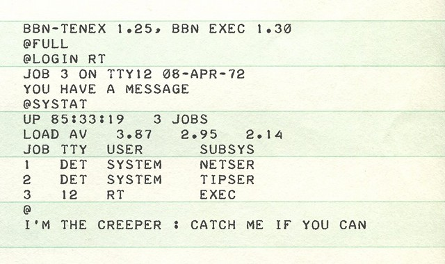

What is The Latest Trend In CyberCrime?
Cybercriminals are using more advanced and scalable tools to breach user privacy, and they are getting results. Two billion data records were compromised in 2017, and more than 4.5 billion records were breached in the first half of 2018 alone.Here are the latest trend use in 2019
